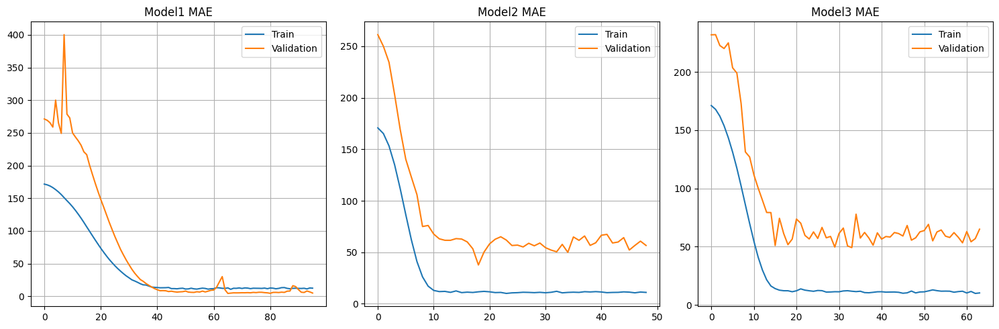
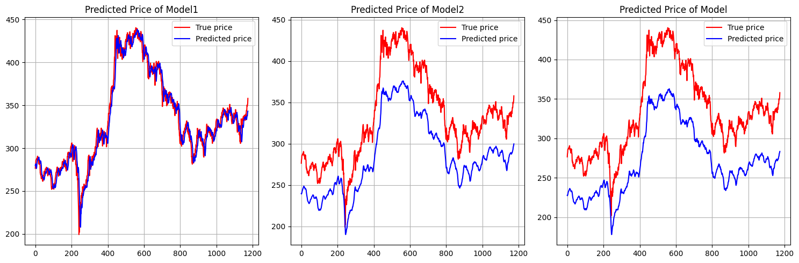

import FinanceDataReader as fdr
import pandas as pd
import numpy as np
import matplotlib.pyplot as plt16 Example: Forcasting KOSPI200 Close Price using LSTM
16.1 분석 개요
본 프로젝트에서는 시계열 데이터 분석 및 예측에 특화된 딥러닝 알고리즘인 LSTM금융 시계열 예측에 활용하기 위해 LSTM을 이용하여 코스피200 지수 종가를 예측하는 모델을 구축하고자 합니다.
- (분석대상) 코스피200 지수
- (분석기간) 2000.1.1 ~ 2023.12.31
- (분석방법) 10거래일간 코스피200 지수의 종가로 다음 거래일 코스피200 지수 종가를 예측하는 회귀(Regression) 모델 구축
16.2 데이터 전처리
FinanceDatareader 라이브러리를 이용해 분석기간 동안의 코스피200 지수 종가 데이터를 수집하였습니다. 그 후 모델 훈련을 지수 데이터를 시간 순서에 따라 training(60%), validation(20%), test(20%) 데이터로 분할하였습니다.
training 데이터는 LSTM 모델 학습을 위해 사용하고, validation 데이터는 학습 과정에서 하이퍼파라미터 등 검증을 위해 사용하며, 마지막으로 test 데이터는 모델 학습이 완료된 후 성능(예측력)을 평가하기 위해 사용합니다. 상기 절차를 수행하기 위한 코드는 다음과 같습니다.
df = fdr.DataReader('KS200', start = '2000-01-01', end = '2023-12-31')
df = df.reset_index()
df = df[['Close']].copy()from sklearn.model_selection import train_test_split
data, test_data = train_test_split(df, test_size = 0.2, shuffle = False)
train_data, val_data = train_test_split(data, test_size = 1/4, shuffle = False)
train_X = train_data
train_Y = train_data
val_X = val_data
val_Y = val_data
test_X = test_data
test_Y = test_data다음으로는 라이브러리를 통해 취득한 데이터를 LSTM 모델이 인식할 수 있도록 시퀀스 데이터 형태로 변환하여야 합니다. 10 거래일 간 코스피200 지수의 종가로 11 거래일째 종가를 예측하는 형태이므로 10 + 1 형태의 시퀀스를 구성하게 됩니다.
def seq2dataset(X, Y, window, horizon):
Xdata = []; Ydata = []
for i in range(len(X) - (window + horizon) + 1):
x = X[i : (i + window)]
y = (Y[i + window : i + window + horizon])
Xdata.append(x)
Ydata.append(y)
return np.array(Xdata), np.array(Ydata).reshape(len(Ydata), horizon, 1)train_X, train_Y = seq2dataset(train_X, train_Y, 10, 1)
val_X, val_Y = seq2dataset(val_X, val_Y, 10, 1)
test_X, test_Y = seq2dataset(test_X, test_Y, 10, 1)16.3 모델 구성
하이퍼파라미터 조정에 따른 모델 성능 차이를 비교하기 위해 총 3가지 모델을 구성하였습니다.
- Model 1: 가장 단순한 형태의 모형으로 10개의 노드로 구성된 1개의 LSTM 은닉층으로 구성
- Model 2: 노드의 수를 100개로 증가시켰으며, overfitting을 방지하기 위해 0.2의 비율로 개별 노드가 드롭아웃되도록 설정
- Model 3: 은닉층의 수를 늘려서 100개의 노드로 구성된 첫번째 LSTM 은닉층과 50개의 노드로 구성된 두번째 LSTM 은닉층으로 모델 구성. Model 2와 마찬가지로 overfitting을 방지하기 위해 각 은닉층에 대해 0.2의 비율로 드롭아웃 설정
각 모델에 공통적으로 적용되는 사항은 다음과 같습니다.
- 활성화함수: ReLu
- Regression 모형이므로 출력층에는 별도의 활성화함수를 지정하지 않음
- 가중치 초기화: He_normal
- 옵티마이저: Adam
- 손실함수: Mean Squared Error
- 측정기준: MAE
- 배치 사이즈: 30
- 에포크: 최대 200
- 조기종료: 30 에포크 동안 validation loss가 개선되지 않는 경우 훈련을 조기종료
- loss가 가장 작은 모형의 가중치를 저장하도록 체크포인트 설정
개별 모델은 Tensorflow를 이용하여 구축되었으며, 세부 코드는 다음과 같습니다.
16.3.1 Model 1
import tensorflow as tf
import sklearn.metrics
model1 = tf.keras.Sequential()
model1.add(
tf.keras.layers.LSTM(
units = 10,
activation = 'relu',
input_shape = train_X[0].shape,
kernel_initializer = 'he_normal'
)
)
model1.add(tf.keras.layers.BatchNormalization())
model1.add(tf.keras.layers.Dense(units = 1))
model1.compile(optimizer = 'adam', loss = 'mse', metrics = ['mae'])
call1 = tf.keras.callbacks.ModelCheckpoint(filepath = 'my_call.keras',
monitor = 'val_loss',
save_best_only = True)
call2 = tf.keras.callbacks.EarlyStopping(patience = 30)
callback_list = [call1, call2]
history1 = model1.fit(train_X, train_Y,
epochs = 200, batch_size = 30,
validation_data = (val_X, val_Y),
callbacks = callback_list,
verbose = 0)
model1.load_weights('my_call.keras')16.3.2 Model 2
model2 = tf.keras.Sequential()
model2.add(
tf.keras.layers.LSTM(
units = 100,
activation = 'relu',
input_shape = train_X[0].shape,
kernel_initializer = 'he_normal',
dropout = 0.2
)
)
model2.add(tf.keras.layers.BatchNormalization())
model2.add(tf.keras.layers.Dense(units = 1))
model2.compile(optimizer = 'adam', loss = 'mse', metrics = ['mae'])
call1 = tf.keras.callbacks.ModelCheckpoint(filepath = 'my_call2.keras',
monitor = 'val_loss',
save_best_only = True)
call2 = tf.keras.callbacks.EarlyStopping(patience = 30)
callback_list = [call1, call2]
history2 = model2.fit(train_X, train_Y,
epochs = 200, batch_size = 30,
validation_data = (val_X, val_Y),
callbacks = callback_list,
verbose = 0)
model2.load_weights('my_call2.keras')16.3.3 Model 3
model3 = tf.keras.Sequential()
model3.add(
tf.keras.layers.LSTM(
units = 100,
activation = 'relu',
input_shape = train_X[0].shape,
kernel_initializer = 'he_normal',
dropout = 0.2,
return_sequences = True
)
)
model3.add(tf.keras.layers.BatchNormalization())
model3.add(
tf.keras.layers.LSTM(
units = 50,
activation = 'relu',
input_shape = train_X[0].shape,
kernel_initializer = 'he_normal',
dropout = 0.2
)
)
model3.add(tf.keras.layers.BatchNormalization())
model3.add(tf.keras.layers.Dense(units = 1))
model3.compile(optimizer = 'adam', loss = 'mse', metrics = ['mae'])
call1 = tf.keras.callbacks.ModelCheckpoint(filepath = 'my_call3.keras',
monitor = 'val_loss',
save_best_only = True)
call2 = tf.keras.callbacks.EarlyStopping(patience = 30)
callback_list = [call1, call2]
history3 = model3.fit(train_X, train_Y,
epochs = 200, batch_size = 30,
validation_data = (val_X, val_Y),
callbacks = callback_list,
verbose = 0)
model3.load_weights('my_call3.keras')16.4 분석 결과
Train 데이터와 validation 데이터를 이용하여 학습한 겨로가, 모든 모델이 사전에 설정한 에포크 한도에 도달하기 전에 학습이 종료되었습니다.
아래의 첫번째 그림을 통해 확인할 수 있는 바와 같이 첫번째 모델의 경우 초기 에포크에 validation loss가 급격히 감소한 이후 안정적인 수준으로 변동하였으며, 두번째 모델과 세번째 모델의 경우 초기 에포크에 loss가 급격히 감소한 후 큰 진폭으로 loss가 변동하였습니다.

각 모델을 test 데이터에 적용한 결과, 다음 표와 같이 가장 단순하게 구성한 첫번째 모델이 MSE와 MAE 측면에서 가장 우수한 에측력을 보이고, 가장 복잡하게 구성한 세번째 모델의 예측력이 가장 낮은 것을 확인할 수 있습니다.1
1 MSE와 MAE가 낮을 수록 모델의 예측력 및 일반화 성능이 높음을 의미
| MSE | MAE | |
|---|---|---|
| Model 1 | 107.53 | 7.56 |
| Model 2 | 2270.33 | 46.64 |
| Model 3 | 3803.16 | 60.73 |
다음 그림은 실제 코스피200 지수 종가(true price)와 train 데이터를 학습한 모델이 test data를 통해 예측한 종가(predicted price) 추이를 나타내고 있습니다.
첫번째 모델의 경우 코스피200 지수의 종가 추세를 비교적 잘 예측하고 있으나, 두번째 모델과 세번째 모델의 경우 지수의 상승/하락 패턴은 비교적 정확하게 예측하고 있으나, 예측값이 실제 가격 대비 낮은 수준임을 알 수 있습니다.

16.5 결론
Test 데이터에 대한 일반화 성능을 감안할 경우 최종적으로 첫번째 모델을 이용하여 코스피200 지수의 종가를 예측하는 것이 가장 적절하다고 생각할 수 있습니다.
세가지 모델 중 가장 단순한 첫번째 모델의 예측력이 가장 좋은 이유로는, 모델에 사용한 데이터의 크기가 크지 않으며, 단 하나의 변수로만 구성된 심플한 데이터이기 때문일 것으로 추측할 수 있습니다.
더 장기간의 데이터를 분석한다거나 특성변수를 추가하는 등 데이터의 복잡도가 증가하는 경우, 이에 맞춰 두번째 모델과 세번쨰 모델과 같이 더 복잡하게 구성한 모델을 사용할 필요가 있을 것으로 추측할 수 있습니다.
Note
모델이 실제 코스피200 지수의 움직임을 잘 예측하고 있으나, 이는 단지 LSTM 알고리즘이 가장 최근 시점의 종가를 예측치로 사용하는 것을 유용한 전략이라고 판단했기 때문입니다. 실제로, 실제 가격과 예측치의 추이를 살펴보면 예측치가 실제 가격을 일정 간격을 두고 단지 모방하기만 하는 것을 살펴볼 수 있습니다.
Caution
본 분석에서는 편의를 위해 지수 종가를 그대로 사용하였으나, 일반적으로 종가는 비정상시계열에 해당하므로 수익률, 차분값 등의 정상시계열로 변환하여 분석하여야 합니다.